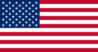

Julia SPRIGGS fr
Full Stack Developer
- cv@julia-spriggs.fr
 +33 6 95 19 93 45
+33 6 95 19 93 45 Bordeaux, France
Bordeaux, France julia-spriggs
julia-spriggs julia-spriggs
julia-spriggs my website
my website
CONTACT
-  English - Native | US Citizen
- French - Fluent (CEFRL C2 Level) | French Citizen
LANGUAGES / CITIZENSHIP
HARD SKILLS


- Project Management
- Collaborative problem-solving
- Communication
- Teamwork
SOFT SKILLS
EDUCATION
Wild Code School, Remote | 2023-2024
Level 6, Applications Designer/DeveloperStack used: MERN stack, Typescript, Docker, Flutter, React Native
Ironhack Bootcamp, Remote | 2022
Learned to use the MERN stackGeorgia Institute of Technology, Atlanta, USA | 2006-2007
M.S. International Affairs, specialized in International EconomicsAs a former French teacher in the United States, and English teacher in France, I have a passion for lifelong learning and developing new skills that can be used in my professional and personal life.
Former colleagues and friends often say that I'm dedicated and incredibly tenacious. I don't like to let things half-done - I always want to see things through to the end.
I've recently finished a bootcamp learning about the MERN stack, and am eager to put my new knowledge into use and learn ever more.
PROJECTS
Furever Friends
- Website to help potential adopters find cats and dogs available for adoption with different associations.
- Developed a responsive web application from scratch within one and a half weeks, working in a 2 person team
- Tech stack: React, Node, Express, MongoDB, Mongoose, JSX, Axios
Cocktail Recipes
- Website where one can find, create, edit and delete different cocktail recipes
- Developed a responsive web application from scratch within 5 days, working in a 2 person team
- Tech stack: Node, Express, MongoDB, Mongoose, Handlebars, Bootstrap
Kitten Mittens Game
- A game where the user has to move a pair of mittens using their arrow keys to try and get the mittens on the kitten, who moves back and forth in random directions. Every time the user succeeds, the kitten moves increasingly faster.
- Developed the game from scratch within 5 days, working alone
- Tech stack: Javascript, HTML, CSS
EXPERIENCE
Depot Operations Manager Associate, 2017-2021
Creapharm Clinical Supplies, Le Haillan, France
- Communication and back-up of Packaging and European Distribution Project Managers, to ensure the constant, consistent workflow of clinical trials
- Collaboration with said Project Managers and the warehouse, to make sure products are released and ready for transport/forecasted shipment deadlines
- Management and follow-up of project plans, in collaboration with clinical, packaging, and distribution teams
- Constant communication between depots and clients in order to assure the smooth functioning of clinical trials in outside EU countries and maintain client satisfaction.
Assistant Project Manager | 2016-2017
- Follow-up and defining of priorities for internal planning purposes for all clinical trials
- Communication and collaboration between project managers and the warehouse to ensure timely shipments
- Collaborative sessions to help open a new depot branch in the United States
Foreign language teacher
Gironde and Landes departments, France, 2012-2016
Atlanta Public Schools, Atlanta, USA, 2009-2012
- Created programs around important themes that were essential for students (business discussions, negotiations, handling difficult clients, intercultural differences in work environments)
Computer Literacy Coordinator
Refugee Family Services (now New American Pathways), Stone Mountain, USA, 2008-2009
- Created and taught computer literacy curriculum that tied in with other major subjects (especially Math, Reading, and Science) in the Afterschool program in Youth and Special Services, from ages 6-17
- Managed a group of dedicated volunteers in the Afterschool program